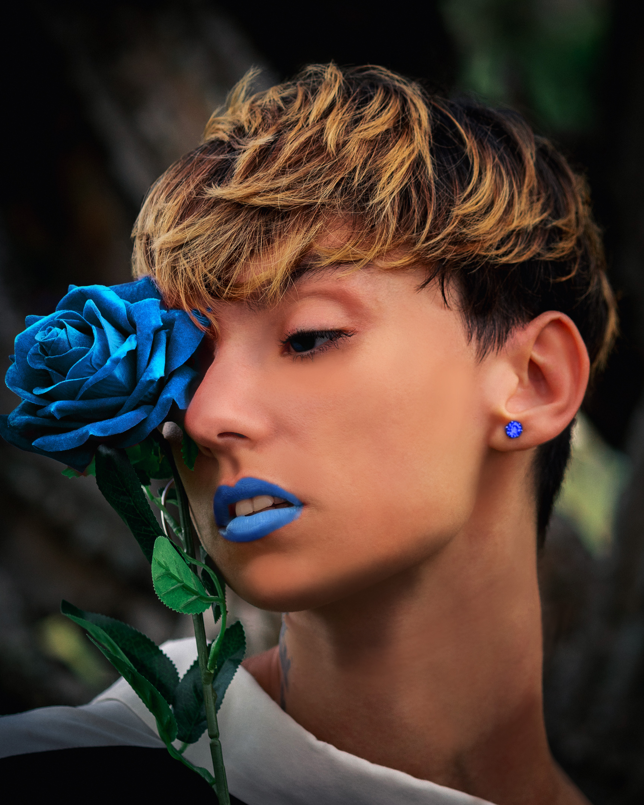
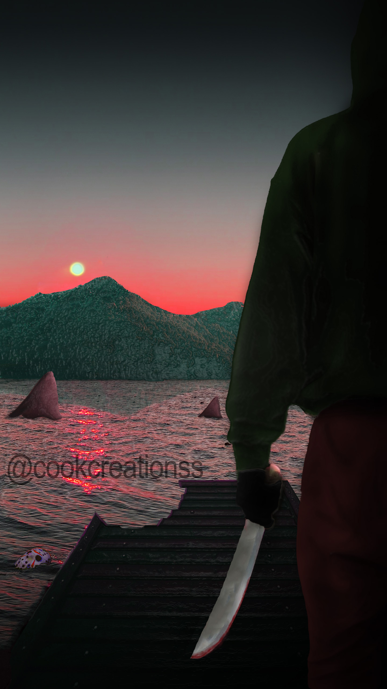
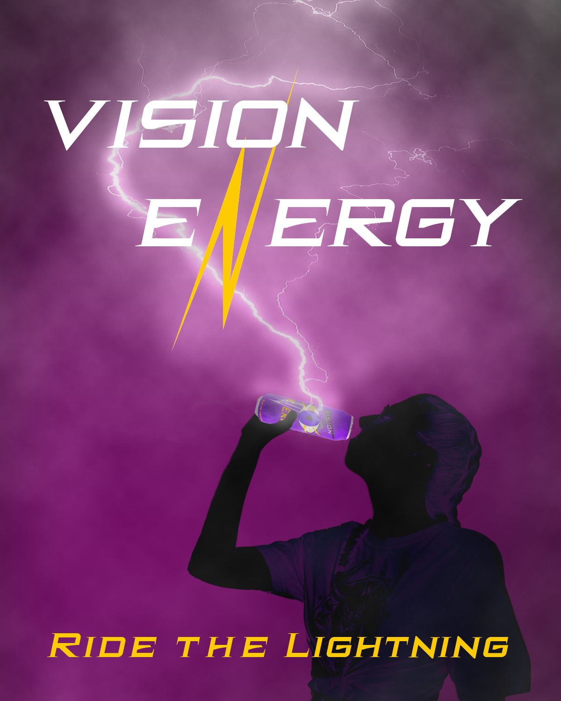
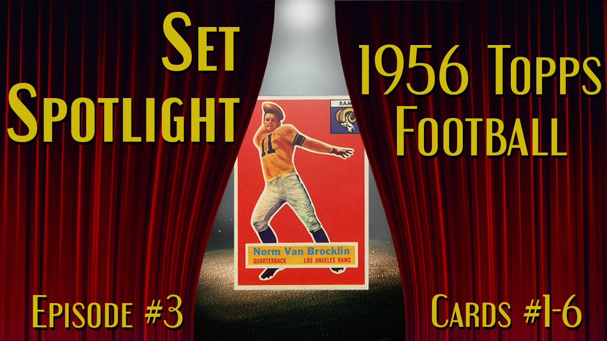
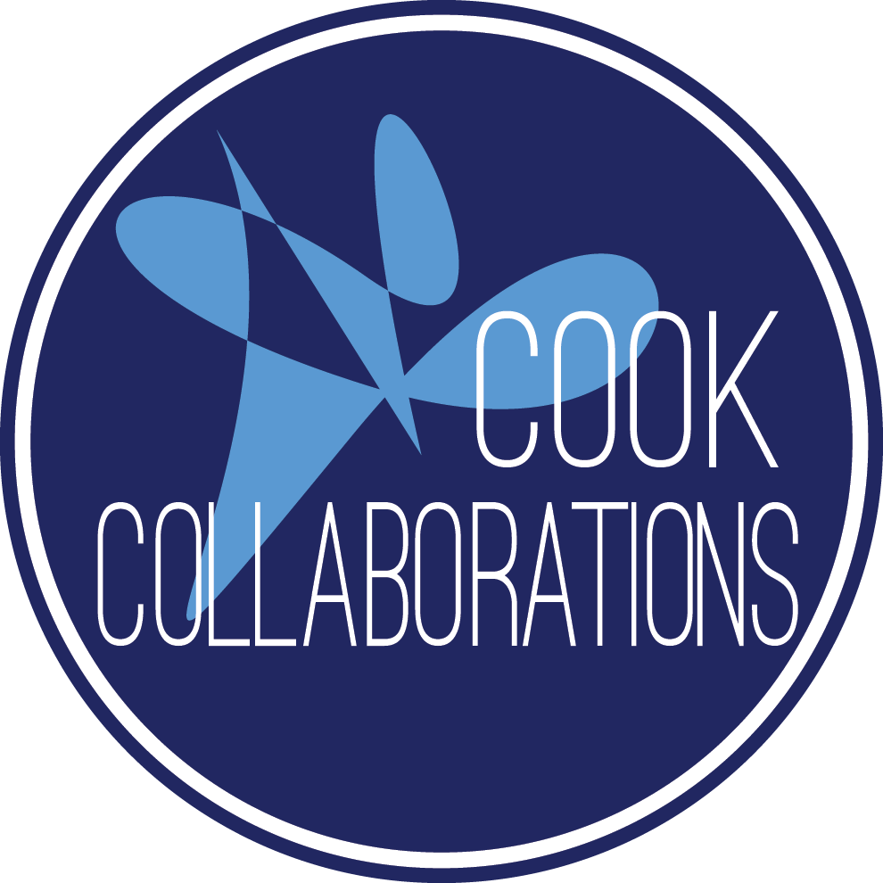

Brian Cook
Freelance Graphic Designer
Certified in Graphic and Web Design, I specialize in logos, apparel designs, and documentation layouts.
Portfolio
Below you will see some of my work throughout my some what short of a career in graphic design!
This was given to us as a Blemish and Color correction project so I fixed the blemishes on the woman and changed the lipstick and rose color to blue. This was a composite image that I created my first week back in classes in Spring of 2021. My first job was at a movie theater and the manager and I would always come up with funny or 'out there' movie titles.
This was one of the best and I decided to have it be the inspiration for my first assignment!
This Beverage Ad was for a project where we had to create a new beverage and a whole Campaign behind it. Mine was Vision Energy which was an energy drink that helped you focus for those late nights of work!
This is a thumbnail I designed for a friend of mine who recently started a YouTube Channel!
Cook Collaborations was the original name I came up with but the wife didn't like it so I changed it to Cook Creations HA!
Blue Rose

Jason vs. Jaws

Beverage Ad

YouTube Thumbnail

First Logo

Work Experience
I consider my self a journeyman worker with the types of jobs I have had over the years. Running a pizza program at a retirement facility, HVAC technician, landscaper, wood worker, staff lead at the movies, and plenty more odd jobs I finally found something I enjoy in Graphic Design! So here is some of the work experience in that field!
Logo Rebrand and Design
Cook Creations
Spring 2021-Present
Logo rebrands performed for Cardinal Woodworks and Quality Coatings based in Apex but work all over the triangle. Including a new logo design for Timeless Accents out of Apex/Cary area. Clients gave me great feedback and I was happy with the end products for all three!
Education
Wake Technical Community College
Certification in Design Basics, Certification in Graphic & Web Design, Certification in Graphic Design
2014-2015 & Spring 2021-Present.